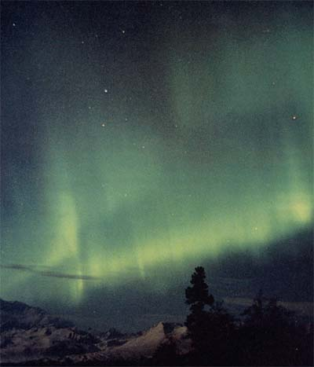
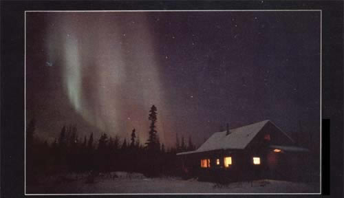
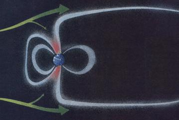
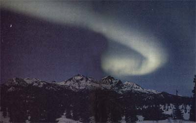
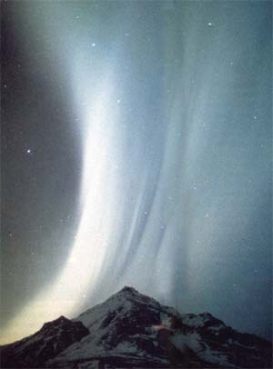

0N THE NIGHTS OF MARCH 12 and 13, 1989,the phones of police and radio stations in southern parts of the country began ringing. People lucky enough to be outdoors marveled. A legend had become reality: The colored shapes of the aurora borealis glowed in skies as far south as the Caribbean and Central America. And there's a strong chance people across the U.S. may see the lights again. In fact, September and October of 1989 should offer some prime opportunities.
Northern lights are, indeed, usually a phenomenon of the Far North. Even in southern Canada they seldom cover the entire sky. A typical good auroral display in the northernmost U.S. begins with the formation of a slightly greenish horizontal arc of light low in the north. Next, several vertical rays may appear within, or extend up from, the arc and begin to restlessly search the northern sky. Up to this point, the aurora is already eerie and beautiful enough. But, if it goes to the next amazing stage, the observer will never forget the experience.
This September and October may see the northern lights moving south.
Multiple arcs appear. These may become entirely composed of fine rays and form auroral curtains that may ripple along seeming folds as if blown by some vast wind. Red, purple, green and various combinations of these colors may tinge parts of the curtains with patches of radiance, pulsing on and off all over the sky. This light can upstage a full moon, or on a moonless night be bright enough to read by. If a curtain extends to directly overhead, it may be seen as an awesome auroral corona, sometimes rotating, with its curving arms of light extending to all quarters of the sky. The aurora may flicker five to 10 times a second, or it may flame with waves of brightness rolling from the bottom to the top of a formation so that the sky appears to be on fire. After maybe an hour of ceaseless activity, peaceful cloudlike patches of northern lights may slowly fade as the heavens return to rest. There may, however, be a second or third firing of auroral splendors before dawn.
Your chances of seeing the greatest displays of the northern lights are tremendously increased, of course, if you find yourself above 40° north latitude. Last March's auroral storm in the southern U.S. consisted mostly of mighty patches of red aurora with only modest structure and movement. But you never can tell.
Scientists are still far from a full explanation of the aurora.In the 1980s, a new round of research investigated how atomic particles of the solar wind accelerate in the earth's magnetosphere, striking earth's upper atmospheric gases with enough energy to cause the aurora.
A great aurora often starts with a disturbance on the sun called a solar flare. These flares frequently take place in association with groups of sunspots, patches on the sun's surface that appear dark because they're slightly cooler than their surroundings. If the flare is pointed toward the earth, its particles may reach us in one or two days.
The particles-most importantly, electrons-become trapped by the earth's magnetosphere and begin accelerating along the lines of the earth's magnetic field toward the magnetic poles, which are somewhat displaced from the geographical poles. There, the accelerated electrons encounter upper atmospheric gases in a large oval-shaped region around each magnetic pole; those particles excite the gases, causing them to glow in much the same way that electric current in a neon light causes the gas to shine. (The glow is emitted when an electron energized into a higher orbit of its atom falls back into its original orbit.) Unlike in neon lights, however, the prodigious power supply in northern lights is always varying, and the currents play with wild abandon across thousands of miles of the earth's atmosphere.
The gases-mostly oxygen and nitrogen-shine at altitudes ranging from as low as 50 miles up to 500 miles or more. Thus, the north auroral oval (which in satellite photos looks like a fiery necklace) contains an aurora up to hundreds of miles tall. These lights maybe seen towering-as arcs or curtains-in the north sky and may even be visible to observers far south of the location where the display appears directly overhead.
Particles on the solar wind are captured by the earth's mag relic Hold and carried to the polar regions, where they form an "auroral oval"around earth pole.
SOMETIMES A MAJOR SOLAR FLARE will be mentioned in the news; if so, you can watch for a possible auroral display about 24 to 72 hours after the flare occurs. Another possible forerunner of a good aurora is a large sunspot group near the central meridian, the central north-south line, on the sun. (Check a good astronomy book for information on how to view sunspots safely by projection with a telescope or binoculars; never look at the sun directly unless you have a suitable solar filter and plenty of experience!)
Additional information about flares, sunspot groups and probable northern lights sightings can sometimes be obtained by calling several non-toll-free recorded phone messages. Sky & Telescope magazine's Skyline (617/497-4168) offers a variety of interesting astronomy and space information, which is usually updated each Friday. The phone message of the Space Environment Services Center in Boulder, Colorado, (at 303/ 497-3235) is rather technical, but you can gather two important things from it. First, you are told whether the earth's magnetic field is-or will be-quiet or active. (A minor storm may produce good northern lights for much of the U.S., and a major storm means we should all be out under the night skies.) Second, every three hours, in Universal time (a 24-hour time period that is five hours ahead of eastern standard time and six hours ahead of central standard), the center gives the Boulder K Index, a measure of the disturbance of the earth's magnetic field. If that measure is four or less, an auroral display for much of the U.S. won't be occurring, but if it's higher than five, the aurora will almost surety be visible well south of Canada.
When looking for the northern lights, try to get away from city lights-and hope for little or no moonlight. You won't be fooled by glows from cities to the north if you keep in mind that the aurora, even in its quieter stages, usually varies in form or position rather quickly. Though a great auroral display may occur at any hour, the middle of the night is the best time to see one. If there's a major occurrence in the early evening, you can often see more later in the night.
And how can you capture this display on film? As with any subject requiring a long exposure, you should have a 35-mm camera, tripod and cable release. Fast film (for instance, ISO 400) will permit shorter exposures with sharper detail, since the aurora's motion will not blur the structures so much. Experiment with different exposure times (extremes of maybe five seconds to a minute) depending on the brightness and movement of the aurora and the speed of your film .
At last we come to the reason why the next eight months may offer auroral storms equaling those of last March.
Scientists have long known that solar activity tends to run in a cycle of about 11 years from one maximum to the next. But some maximums are stronger than others. The event that occurred in 1957 and'58 was the most powerful of the last few centuries, with auroral displays visible over the entire U.S. every month or two during that period. We are now approaching another maximum in the solar cycle-one that could rival the 1957-58 peak. The exact maximum may occur in January 1990, but great auroral displays are more likely to occur around the earth's equinoxes, when the active latitudes on the sun are pointed more directly toward us. Thus September through October 1989 and March through April 1990 could produce the best northern lights shows in many decades.
Though the earth's magnetic field is unpredictable, with a little desire and a little luck, people all over the country may get a chance to see the sky's greatest display.
|
 DAVID PARKHURST Curtains of color thrown across the sky. This September and October may see the northern lights moving south. |
MICHO HOSINO/ALLSTOCK INC. Particles on the solar wind are captured by the earth's mag relic Hold and carried to the polar regions, where they form an "auroral oval"around earth pole. |
 ILLUSTRATION BY DON OSBY Though the earth's magnetic field is unpredictable, with a little desire and a little luck, people all over the country may get a chance to see the sky's greatest display. |
|
 ©JOHNNY JOHNSON/ALLSTOCK INC. |
 NANCY SIMMERMAN/ALLSTOCK INC |
 |